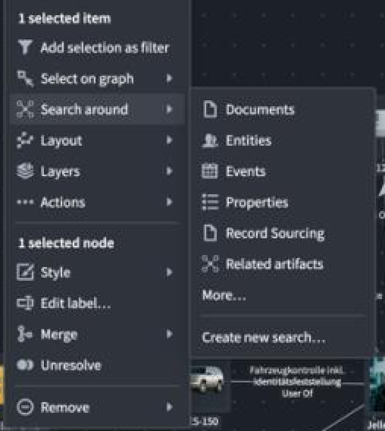
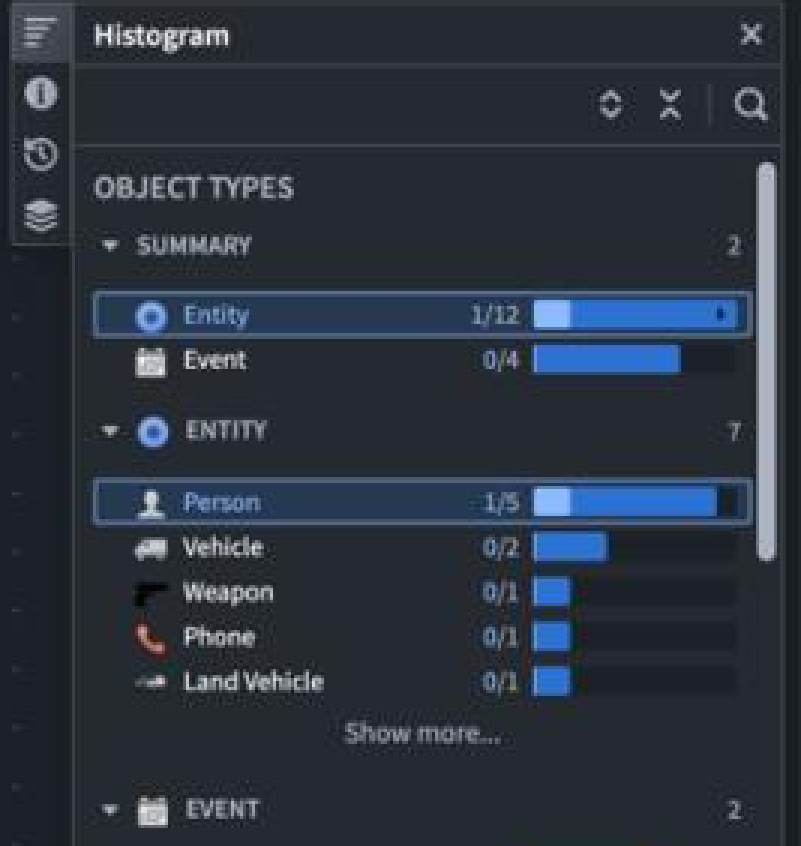
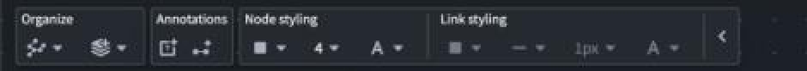
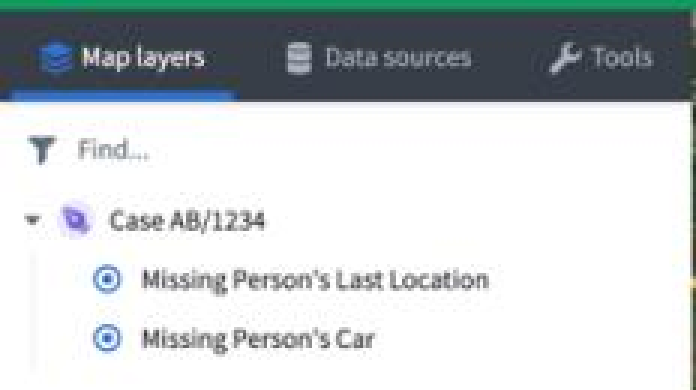
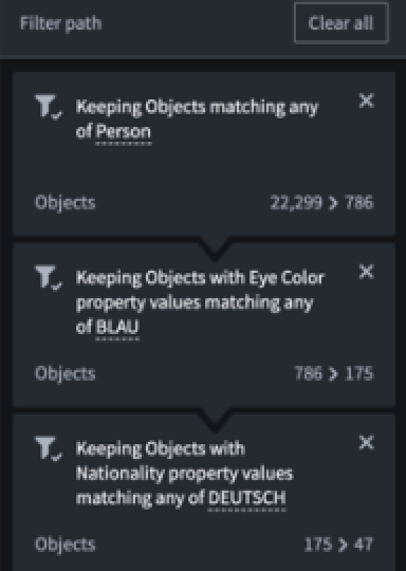
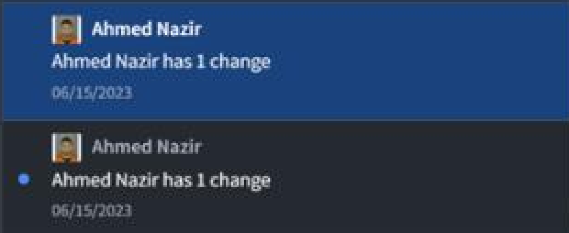
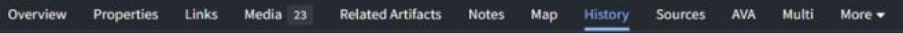
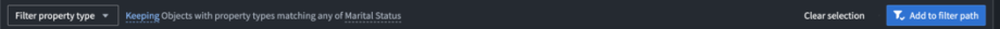

Left is Palantir, cropped straight out of the official G-Cloud 14 Gotham service definition PDF and upscaled 3x with nearest-neighbour so nothing is smoothed away. Right is this design. The measurements under each pair are what was taken off the original and applied.
pdfimages on the SDD, then pixel sampling for colour and
column or row profiles for geometry. Everything asserted below is a number
taken from the image, not an impression of it.
Item pitch measured at 20px with a 24px hover band. Bold section header with no icon and no hover. 15px monochrome line icon, label, right-aligned submenu chevron. Hairline separators with 4px of air. The submenu opens to the right and is top-aligned with its parent row. Hover is a background step, not an accent fill.

Title row 28px with a close affordance on the right, then a separate 26px icon bar right-aligned with a vertical rule before search. Uppercase group headers carry a disclosure triangle and a right-aligned total. Item rows are 22px: type icon, label, a monospace fraction, then a two-tone bar on a dark track where the lighter segment is the matching portion. Selection is an accent outline, not a fill.

Each group carries a small muted label above its controls and is divided from the next by a vertical hairline. Controls are split buttons: a 15px icon and a chevron, or a bare value and a chevron. This is the most distinctive piece of Gotham chrome and this design did not have it at all.

Icon plus label, active in full-strength text with a 2px accent underline and an accent-tinted icon, inactive muted. Below it a filter row with a funnel, then a tree with a disclosure triangle, a coloured type icon and indented children. Note the real panel is light; the same rules hold on either surface.

Object Explorer builds a query as a stack of cards. Each carries a funnel icon, a sentence with the matched values as underlined accent chips, a remove affordance top-right, and a footer showing the narrowing as a count transition. The transition is the point of the card: it says what the step actually did.

Keeping contacts matching any of
Keeping contacts with category matching any of
Keeping contacts with altitude in
Channel list with collapsible groups and right-aligned counts; a header row with an overflow affordance; a filter row carrying a funnel and a grouping control. Message rows are avatar, bold subject line, detail, timestamp. Selection is a FILLED accent row here, unlike the tree where it is an outline, and unread carries a dot in the left gutter.

The entity header is avatar, name, type, and an actions menu on the right. Tabs carry count badges only where a count exists, and overflow into a More menu rather than wrapping. Below, change history is a date gutter on the left against plus-marked group headers with their lines indented, and redacted values render as a grey bar rather than being omitted.

A dropdown on the left, then a sentence describing what the current selection would do with its operative words in accent, a dismissive text link, and the primary commit button on the right. The sentence is the confirmation, so the button needs no explanation.

The grammar above is consistent enough to extend. Every panel below is built from the same parts: a title row with a close affordance, a right-aligned icon bar, uppercase group headers with a disclosure triangle and a right-aligned count, 22px rows, a monospace numeric column, and selection as an outline rather than a fill. None of these panels appears in the source PDFs; they are what the rules produce when applied to what this product actually holds.
| Component | Before | After |
|---|---|---|
| Context menu | did not exist | section headers, 24px rows, icons, submenu chevrons, separators |
| Histogram | label, plain track, count on the right | grouped tree, disclosure triangles, type icons, monospace fraction, two-tone bar, outlined selection |
| Toolbar | a row of bare icons | labelled groups divided by hairlines, split buttons with chevrons |
| Panel header | title and a badge | title with close, then a right-aligned icon bar with a rule before search |
| Tabs | text only | icon plus label, accent underline, accent-tinted active icon |
| Icons | mixed weights | one family, 1.5px stroke, 15px, monochrome, inheriting colour |